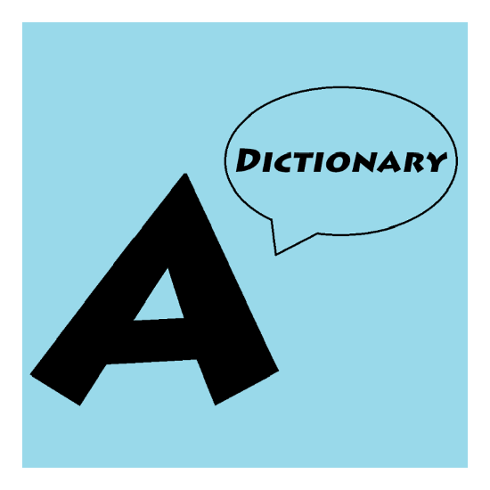

|  | Audio Dictionary |
| APK : https://github.com/gzhang1337/audio-dictionary/releases/tag/v0.1 | |
| Source Code: https://github.com/gzhang1337/audio-dictionary.git | |
| Team members: Yinchen Zhang, Brendan Rowan, Rae Kang, William Harris, Alex Padilla This app was developed in Android Studio and tested on API level 21. Testing: App was manually tested on group members Android phones and on Emulator. This app helps users improve their pronounciation of words. Users can submit audio recordings of themselves speaking words or phrases. Other users can listen to these recordings, and give feedback on how it sounds. | |
|
|
| link to youtube video | |